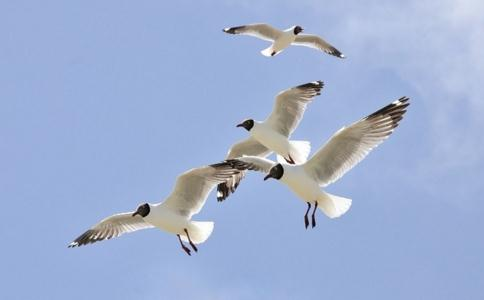

一、
二、尽量在天黑之前将所有鸟类放完。除了猫头鹰等夜行鸟，其他多数鸟类比如斑鸠等都会在天黑之前投林栖息，放得太晚，它们在黑夜里辨不清方向，会瞎飞误撞，很容易被其他野兽吃掉。之前很多次进山放生，放鸟时都已入夜，此时它们往往难以适应，呆在原地很长时间才知道飞走，后来只要有鸟，一概都会在落日之前全部放完。
三、不同地域的鸟类最好在当地放生，一些迁徙性的候鸟尽量不要在北方寒冷的冬季放生，以免它们难以适应温差环境死亡。当然，这个只是尽量，如果面临不救必死的情况，那么不管南方北方先放了再说，比全军覆没强过百倍！
四、一般小鸟和猛禽、野兽等最好分开来放。这个我们有切身体会，一般情况下的放生什么物命都有，鸟儿更是各种各样。以前没经验，往往都是所有鸟一起放飞。常见情形是：本来各种小鸟出笼后都会在附近树上歇歇脚，可是一放出来一只鹰或雕，其他大小鸟儿立即四散奔逃，跑得慢的现场就被鹰们擒住，就地啄食！此时也没得道理跟它们讲，只能一块石头扔去，将鹰赶走。
还有野猫等兽类也尽量不要和鸟放在同一地点，某次刚放完斑鸠后又放出两只野猫。有只斑鸠可能饿极了，就在附近不远处啄食草种，那只大黑猫还真够“苍”，“噌”一声扑了过去，斑鸠惊觉立即起飞，老猫竟平地跳起一米多高一爪子将它拍了下来，然后在我们眼皮底下，紧接着一爪子将斑鸠的肚皮豁开，逮住内脏就啃，看得我们目瞪口呆，根本来不及救援！后来得知，那两只猫也已经两天水米未进了，难怪会饥不择食，之后再放猫都会留到最后单独找地方放，尽管它们会一直“喵喵”叫个不停以示抗议。
五、很多被网捕的鸟儿翅膀都已受伤，有的是被猎人强行从网上撕下时弄伤的，有的是被猎人将翅膀剪去一截，以防它们逃走。此时即便被放生它们也丧失了飞行能力，但其求生欲望都很强烈，仍会拼全力一蹦一跳藏身到草丛中。遇到这种情况，放完生后不要马上离开，要将不会飞的鸟收集起来，将它们送到密林深处，以免被人发现再来捕捉。
有时会有师兄提出先拿回家收养一段，等它们翅膀长好后再放，但这不太具备操作性，因为多数野生鸟类都会因为难以适应新环境或气闷而死，多数情况还不如将它们放归山林
六、鸟类极易窒息死亡，尤其是在夏天天气炎热之时，所以在运输过程中一定要将它们放在阴凉通风的地方。装鸟的器具也要注意，最好用透气性好、空间大的鸟笼，千万别图省事用塑料袋或网兜等，否则到达放
七、每次放鸟都会有少数因为种种原因死在笼中，放完之后不要随意丢弃，只管活得不管死的，一定要将它们的尸体收集起来，再念几遍经咒之后埋葬，我们一般会念“
八、冬天给鸟类施食与放生一样重要！冬天食物较少天气寒冷，城市中很多麻雀、野鸽子等都会因冻饿而死，尤其是北方！所以建议各位同修，冬天经常给鸟类买些食物如
九、放鸟时如果遇到捕鸟的粘网，不用客气，坚决拆除，下网人本身就违法，心虚之下，一般不会争执。有次去河边放鸟，正碰到一个小伙子在沿着河岸设网，足有几十米长，高十米左右。我们立即驱车上前，由我出面冒充林业公安，称接到群众举报前来查处，狠狠地训了小伙一顿并没收了他一张网。小伙没有丝毫怀疑，任我教训半天并保证以后绝不再犯，这才放他走人，那一带的鸟儿们应该能安稳一阵了！
十、海涛大法师开示说，放生鸟类能提升工作事业运，所以希望工作事业顺利的师兄多放生鸟类。
南无阿弥陀佛
南无
南无
南无
南无药师琉璃光如来